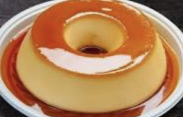

Pudim

Delicious and easy to make flan
Ingredients
- 3 Eggs
- can of condensed milk
- 1 cup milk
- 1 cup sugar
Steps
- Melt the sugar ultil it reaches a caramel consistency
- Spread the caramel in a round cake pan
- Blend the eggs, condensed milk and milk for about 5 min.
- Pour the mix into the cake pan and place in the oven in a bain-marie for about 40 min
- Waint untill it cools down to unmold